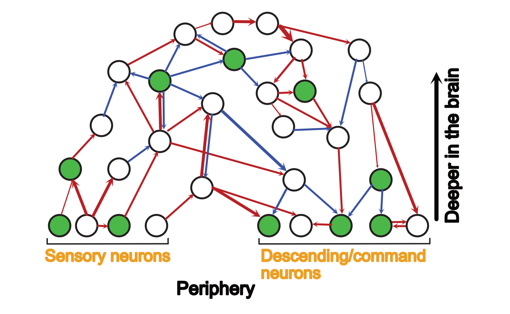

There are now wiring diagrams for both artificial and biological neural networks. Since artificial neural network wiring diagrams have been around for longer, the tools for analysing them are more developed. One might think of using those tools to understand biological neural networks. Here I'd like to highlight some differences in these two systems.
The wiring diagram is all there is for artificial neural networks, but this is not the case for biological ones. There is also wireless information transmission, not through synapses, but through neuromodulators and chemical cascades etc.. But we all knew this.
What's perhaps less thought of is that since artificial neural networks are designed to serve humans, we are almost perfectly knowledgable of the input and the output. This is not necessarily the case for brains, especially for brains of non-humans. We don't have the same sensors and actuators, nor do we have the subjective experience of being them.
In terms of the experimental literature, since we can most easily manipulate the sensory input or observe the motor output, we seem to understand a bigger fraction of neurons closer to the periphery, like this, where green neurons are those we have some knowledge of:
Therefore, we cannot use all the tools used to interpret artificial neural networks. For example, feature visualisation can be very informative in image-processing models, and perhaps in visualising the visual receptive field of biological neurons, but not for visualising olfactory input.
Secondly, instead of expressing everything in terms of the input/output, we should really be expressing everything in terms of the existing literature (i.e. the known neurons). I am therefore compiling a list of known neurons here. Please feel free to add to it through suggestions, and I will approve them.